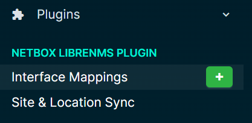
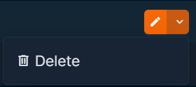

Interface Mappings
interface_mappings¶
Quick Intro¶
Interface type mappings control how LibreNMS interface types are translated to NetBox interface types during synchronization.
The mappings can be customized in the plugin settings menu.
A mapping of LibreNMS Type an LibreNMS Speed combine to make a unique group that map to a Netbox interface type. This means multiple mapping for the same LibreNMS Type can be created.
Note: The LibreNMS Speed is entered as Kbps
Example:
* ethernetCsmacd + 10000000 = 10GBASE-T (10GE)
* ethernetCsmacd + 1000000 = 1000BASE-T (1GE)
* ethernetCsmacd + 100000 = 100BASE-TX (10/100ME)
How to Use Interface Mappings¶
Accessing the Page:¶

- From the main menu, navigate to the Plugins section
- Under Netbox Librenms Plugin, Select "Interface Mappings"
Creating a New Mapping:¶
- Click the green
+orAddbutton either from the menu or on the Interface Mappings page - Enter LibreNMS interface type. You can copy this from plugin's device interface sync page
- Enter Librenms interface speed as Kbps
- Select the Netbox interface type from the dropdown
- Click
Createto save the mapping
Bulk Importing Mappings:¶
The plugin supports NetBox's standard bulk import feature for interface mappings. Click the Import button on the Interface Mappings page to access the import interface.
YAML Example:
---
- librenms_type: ethernetCsmacd
librenms_speed: 1000000
netbox_type: 1000base-t
description: "Standard Gigabit Ethernet ports"
- librenms_type: propVirtual
librenms_speed: 1000000
netbox_type: virtual
description: "Virtual interfaces with 1G speed"
- librenms_type: softwareLoopback
librenms_speed: 8000000
netbox_type: virtual
description: "Loopback interfaces"
- librenms_type: ethernetCsmacd
librenms_speed: 10000000
netbox_type: 10gbase-t
description: "10 Gigabit Ethernet copper connections"
- librenms_type: ethernetCsmacd
librenms_speed: 100000
netbox_type: 100base-tx
description: "Fast Ethernet 100Mbps ports"
- librenms_type: ethernetCsmacd
librenms_speed: null
netbox_type: 1000base-t
description: "Default mapping for Ethernet without speed detection"
- librenms_type: ethernetCsmacd
librenms_speed: 40000000
netbox_type: 40gbase-x-qsfpp
description: "40 Gigabit QSFP+ interfaces"
- librenms_type: ethernetCsmacd
librenms_speed: 25000000
netbox_type: 25gbase-x-sfp28
description: "25 Gigabit SFP28 interfaces"
- librenms_type: propVirtual
librenms_speed: null
netbox_type: virtual
description: "Generic virtual interfaces"
- librenms_type: ieee8023adLag
librenms_speed: null
netbox_type: lag
description: "Link aggregation groups (port channels)"
- librenms_type: softwareLoopback
librenms_speed: null
netbox_type: virtual
description: "Software loopback interfaces"
Notes:
librenms_speedis optional - usenullor omit for type-only mappingsdescriptionis optional - provides context for each mapping- The combination of
librenms_typeandlibrenms_speedmust be unique - Supports CSV, JSON, and YAML formats
Editing Existing Mappings:¶
- On the Mappings page, Locate the desired mapping in the list
- Click the
edit(pencil icon) button - Modify the field mappings as needed
- Save the changes
Deleting Mappings:¶

- Find the mapping you wish to remove
- Select the
Deletebutton from the drop down - Confirm the deletion when prompted
Applying Mappings:¶
- Mappings are automatically applied when interface data is synced between LibreNMS and Netbox
- If a mapping exist for an interface, it will show on the interface sync page with the icon
- If a mapping does not exist, it will show the icon
Best Practices¶
- Check mappings are correct before performing a sync to avoid data errors
- Regularly review and update your mappings to ensure they remain accurate